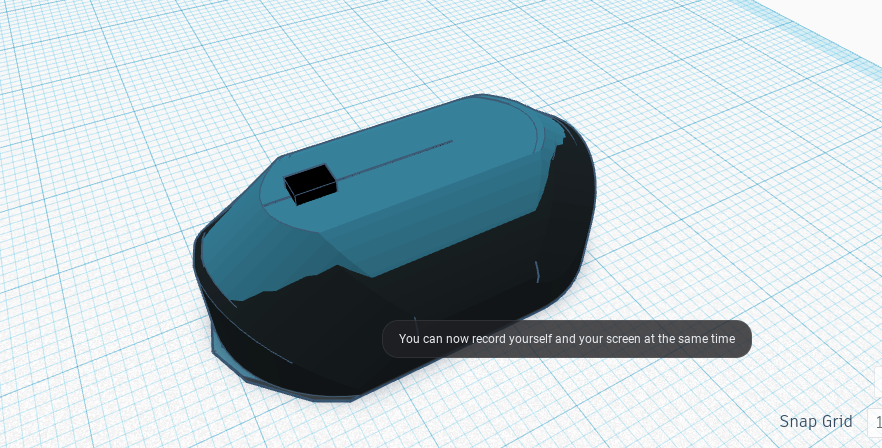
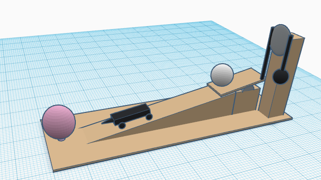
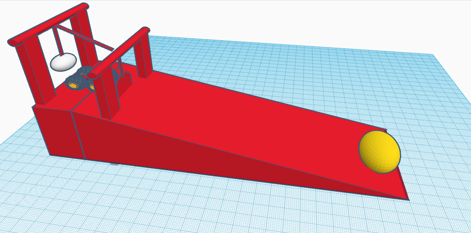
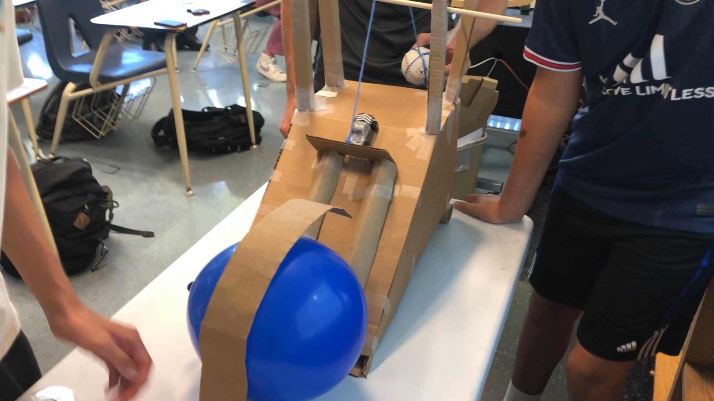
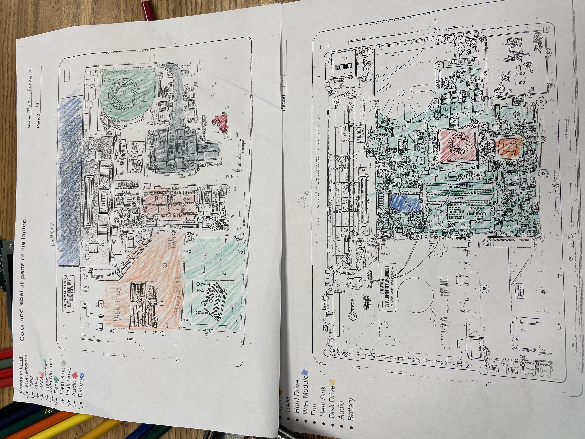
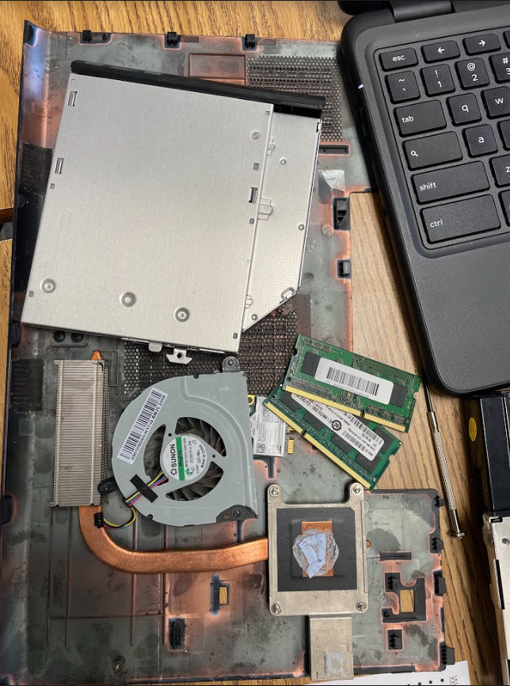

HELLO
Week 1, 9/2/22, We went over the syllabus and how the engineering class will work.
Week 2, 9/9/22, We worked on our project and our second challenge.
The project was making a machine to pop the baloon. We will be using different mechanisms including a pulley, lever, and a wheel and axle.Second challenge was to create a 3D object in TikerCAD that looks like the object in real life. I made a computer mouse, and it was pretty challenging to make the curves.
Here is a picture.

Week 3, 9/15/22, Our group completed modeling our Goldberg in TinkerCAD.
We chose one design that we thought would work the best, and that was Connor's.
There was no time to waste, so we got to building.
It went pretty well, but we had to make some adjustments on some dimensions and designs.
So far, we have completed making the inclined plane and we are working on the pulley and lever.
I am proud of my teammates.
This is my design, and the one under is Connor's.


Week 4, 9/16/22, We continued working on our project and did the challenge of the week.
We used a toy car with a pin to pop the balloon.
For the pulley, we will be using a cardboard tube.
The challenge was to make a paper boat that can float on water with weights.
Our team made the boat as wide and flat as possible so that the surface tension increases.
On our success, even distribution of weights were also important.
Week 5, 9/23/22,We finally finished our Goldberg Machine.
It took a lot of tries and fixes, but at the end we found out the best way for it to succeed.
First thing added was a piece of cardboard that supported the baloon, so that it stays at place.
That wasn't enough, so a platform was added to make everything stable.
Lastly, we learned the best drop method as we kept testing it.
We were proud of ourselves achieving our goal after so many failures.

Week 6, 9/30/22, We started on our big project.
We picked up some broken laptops and dissected it.
Since I knew some basics of PC parts, it wasn't that hard to identify them.
But some were very old and they looked different from the newer ones so we had to do some research.
We color coded the parts according to our laptops in the worksheet.
At the end, we followed the steps backwards to put them back together.
The worksheet and the parts.


Week 7, 10/7/22, We made prosthetics for an animal that is missing a body part.
I chose the proboscis monkey, which is a monkey with a big nose.
We first researched about the animal, then used TinkerCAD to make the missing nose of the monkey.
Since it had to fuction as the original nose, I had to make a hollow space in the nose piece so it works as an echo chamber.
Friday, we wrote detailed directions to make a PB&J sandwich.
Without detailed words, it was impossible to make the perfect sandwich.
Play car game!